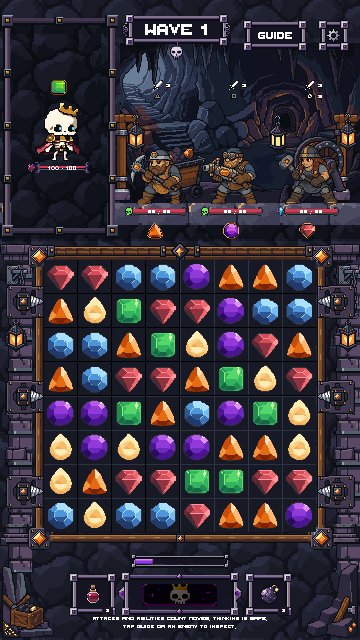
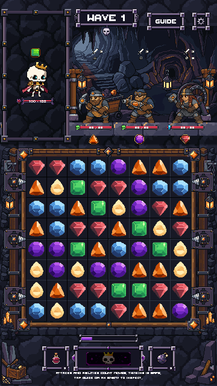
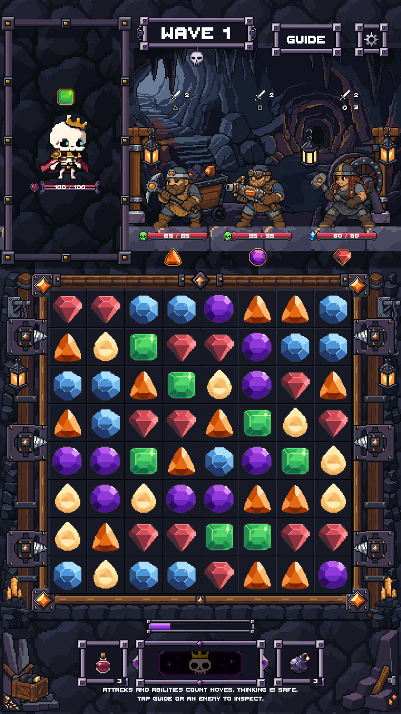
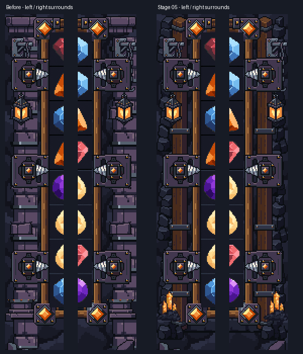
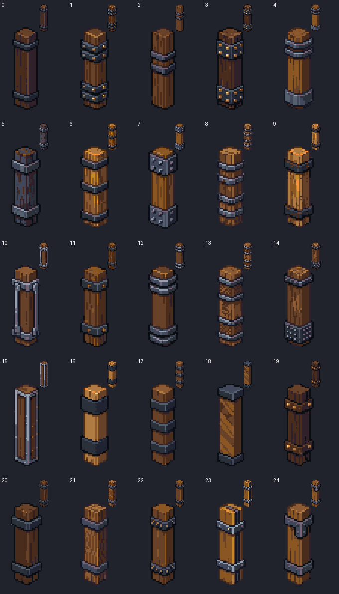
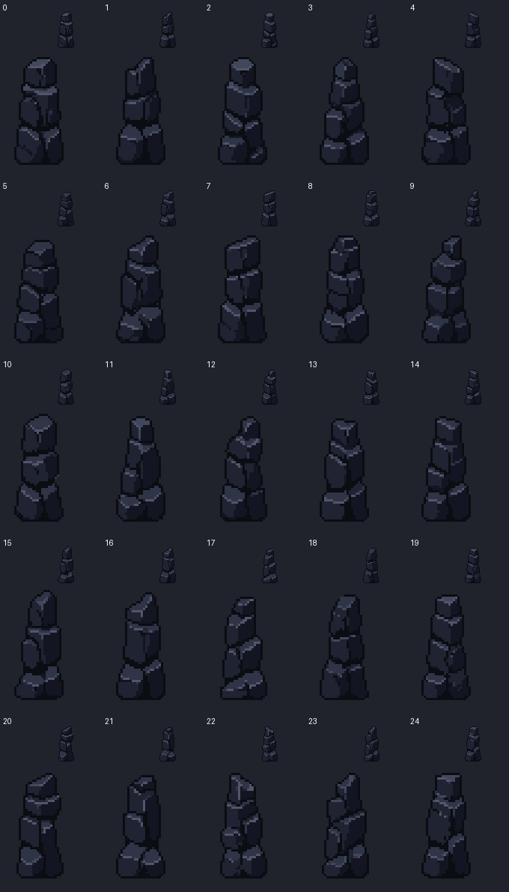
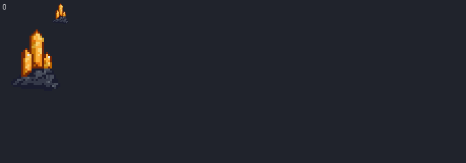

AmberDeposit
24×30 · 9 colors · binary alpha

Timber posts and iron collars carry the approved drills, with dark mine rock behind them and a low rock course beneath the board. Two small amber deposits anchor the lower sides. Nine separate native pieces; earlier artwork remains recoverable.
Actual Unity art-only renders. Production Game is unchanged. Top, frame, drills, separator, board and shared HUD are preserved. Stage 05 only; no merge. PixelLab: 22 generations spent; 202.20 remain. No reference-image uploads.
Approved Stage 04

Stage 05 candidate



24×30 · 9 colors · binary alpha
22×8 · 7 colors · binary alpha

22×46 · 5 colors · binary alpha

22×48 · 5 colors · binary alpha

64×16 · 5 colors · binary alpha

28×17 · 5 colors · binary alpha

20×18 · 9 colors · binary alpha

20×15 · 8 colors · binary alpha

20×24 · 4 colors · binary alpha

Timber candidate 0; rock candidates 5 and 9; single crystal and rock-course sources. The noisy course was simplified into four broad native rock planes in LibreSprite.



Native pixel and repeat checks · Unity checks · Final validation · Generation receipts